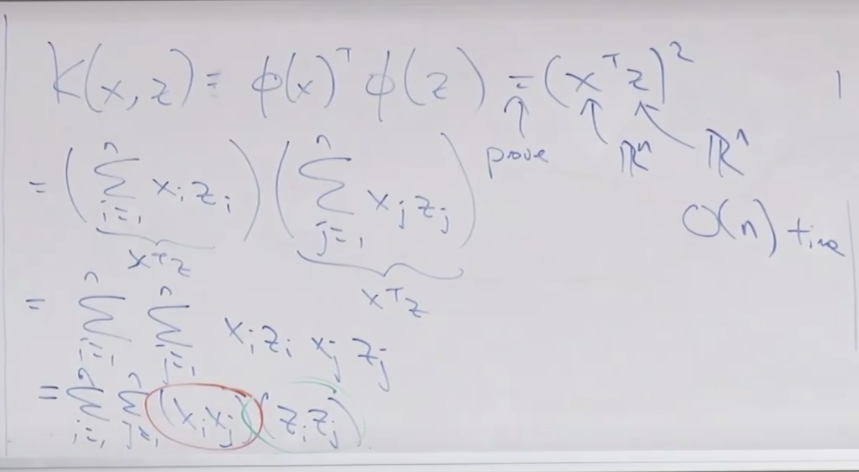
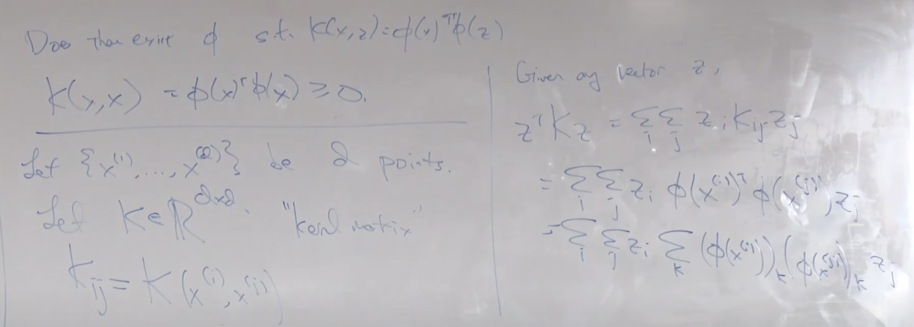
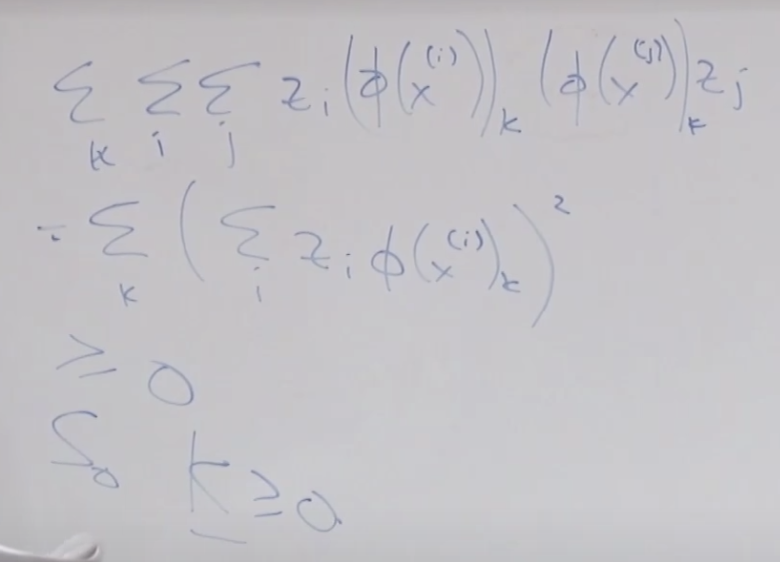
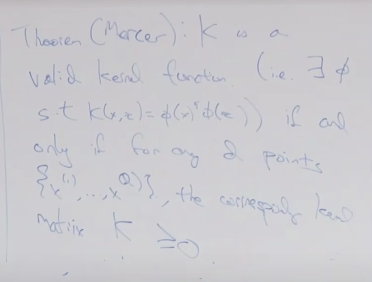

Lec 07-Kernels - SVM
Contents
Lec 07-Kernels - SVM#
Outline#
SVM
Optimization problem
Representer theorem
Kernels
Examples of kernels
Derivation of optimal margin classifier#
In the last lecture, we learned what the optimal margin classifier does is to choose w,b to maximize \(\gamma\)
\(\max_{\gamma, w, b} \text{s.t.} \frac{(y^{(i)})(w^{T}x^{(i)} + b)}{\Vert w \Vert} \ge \gamma\) for i=1,…,m
subject to for every single training example must have the geometric margin greater than or equal to gamma
this causes to maximize the worst-case geometric margin
what this optimization problem is trying to find w and b to drive up and choose gamma as big as possible so that every training example has geometric margin even bigger than gamma
functional margin is the numerator in the equation above
we can scale w, b up/down by any number and the decision boundary remains to be the same
Trick:
if we choose \(\Vert w \Vert = \frac{1}{\gamma}\)
the optimization objective becomes:
\(max \frac{1}{\Vert w \Vert}\)
s.t. \((y^{(i)})(w^{T}x^{(i)} + b)\gamma \ge \gamma\)which becomes
\(\min\limits_{w,b} \frac{1}{2}\Vert w \Vert^{2}\)
s.t. \((y^{(i)})(w^{T}x^{(i)} + b) \ge 1\) for i=1,..m
This will give you the optimal margin classifier
Derivation of SVM#
We are assuming that the dimension of training example is 100 or so. Later we will learn how to solve this classifier when the dimension is infinite. \(x \in \mathfrak R^{100}\)
We are assuming that the weights w can be represented as a linear combination of the training examples \(w = \sum\limits_{i=1}^{m} \alpha_{i}x^{(i)}\)
Representer theorem shows that you can make this assumption without losing any performance using primal dual optimization
Why - Intuition 1:
Using induction and taking the use case of gradient descent, we can see that \(\theta\) is a linear combination of the training examples \(x^{(i)}\)
\(\theta := \theta - \alpha(h_{\theta}x^{(i)} - y^{(i)})x^{(i)}\)
Why - Intuition 2:
The vector w is always orthogonal to the decision boundary. Or the vector w lies in the span of the training examples
The way to picture this is that w sets the direction of the decision boundary and b sets the relative position.
Lets say the training examples are in 3 dimension of which the training examples have no coordinates \(x_{3} = 0\)
Vector w is represented in the span of features \(x_{1} and x_{2}\)
Full derivation is in lecture notes
Lets assume \(w = \sum\limits_{i=1}^{m}\alpha_{i}y^{(i)}x^{(i)}\)
The optimization problem is
\(\min\limits_{w,b} \frac{1}{2}\Vert w \Vert^{2}\)
s.t. \( y^{(i)}(w^{T}x^{(i)} + b) \ge 1\) for i=1,..m
As \(\Vert w \Vert^{2} = w^{T}w\)
Substituting w in equation above, the optimization objective becomes
\(\min\limits_{w,b} \frac{1}{2}\Vert w \Vert^{2}\)
= \(\min\limits_{w,b} \frac{1}{2} (\sum\limits_{i=1}^{m}\alpha_{i}y^{(i)}x^{(i)})^{T} (\sum\limits_{j=1}^{m}\alpha_{j}y^{(j)}x^{(j)})\)
= \(\min\limits_{w,b} \frac{1}{2} \sum\limits_{i=1}^{m} \sum\limits_{j=1}^{m} \alpha_{i} \alpha_{j} y^{(i)} y^{(j)} {x^{(i)}}^{T} x^{(j)}\)
= \(\min\limits_{w,b} \frac{1}{2} \sum\limits_{i=1}^{m} \sum\limits_{j=1}^{m} \alpha_{i} \alpha_{j} y^{(i)} y^{(j)} \langle{x^{(i)}}, x^{(j)} \rangle\)
The inner product of \(\langle x^{(i)}, x^{(j)} \rangle = {x^{(i)}}^{T} x^{(j)}\)
this is the key step towards deriving kernels
Substituting w in equation above, the constraint becomes
\( y^{(i)}(w^{T}x^{(i)} + b) \ge 1\)
= \( y^{(i)}((\sum\limits_{j=1}^{m}\alpha_{j}y^{(j)}x^{(j)})^{T} x^{(i)} + b) \ge 1\)
= \( y^{(i)}(\sum\limits_{j=1}^{m}\alpha_{j}y^{(j)} \langle x^{(j)}, x^{(i)} \rangle + b) \ge 1\)
From the equations above, we see that the feature vectors appear in this inner product only. So the key is if we can compute this inner product very efficiently, we will get good results with infinite dimensional feature vector manipulation.
By using this inner product, we wont need to loop over infinite dimensional elements in an array
These optimization algorithm is now written in terms of \(\alpha\). So now we need to optimize \(\alpha\)
SVM optimization problem (as above) can be further simplified to “dual optimization problem” using convex optimization theory:
\(max_{\alpha} w(\alpha) = \sum\limits_{i=1}^{n}\alpha_{i} - \frac{1}{2} \sum\limits_{i,j=1}^{n} y^{(i)}y^{(j)} \alpha_{i} \alpha_{j} \langle x^{(i)}, x^{(j)} \rangle\)
\(\space\) s.t. \(\alpha_{i} \ge 0, i=1,..n\)
\(\space\) and \(\sum\limits_{i=1}^{n} \alpha_{i}y^{(i)} = 0\)
The way we make prediction is
Solve for \(\alpha_{i}'s\) and
to make prediction, we need to compute
\(h_{w,b}(x) = g(w^{T}x + b)\)
= \(g((\sum\limits_{i=1}^{m}\alpha_{i}y^{(i)}x^{(i)})^{T}x + b)\)
= \(g(\sum\limits_{i=1}^{m}\alpha_{i}y^{(i)} \langle x^{(i)}, x \rangle + b)\)We see that the entire algorithm both the optimization objective that we need to deal with during training and how we make predictions, is expressed only in terms of inner products.
Kernel trick#
Write your algorithm in terms instead of \(\langle x^{(i)}, x^{(j)}\rangle\) as \(\langle x, z\rangle\)
Let there be some mapping from \(x \rightarrow \phi(x)\) from \(\mathbb R ^{1}\text{ or }\mathbb R ^{2} \) to \(\mathbb R ^{\infty} \)
Find way to compute \(K(x,z) = \phi(x)^{T}\phi(z)\), where K is kernel function, which we can use to compute the inner product
Replace \(\langle x, z\rangle\) with \(K(x,z)\), because by doing this we are swapping out x for \(\phi(x)\), which is computationally expensive. Because we have written the whole algorithm just in terms of inner products, we dont need to explicitly compute \(\phi(x)\), we can simply compute these kernels K
Say X is 3 dimensional feature vector \(\mathbb R^{n}\) and we write \(\phi(x)\) with combination of all the features with duplicates, which will make it of \(\mathbb R^{n^{2}}\) dimensions. Similar will be \(\phi(z)\). So we have gone from 1000 features to 1 million features.
The computation time for this is \(O(n^{2})\)
A better way would be if we can prove: \(K(x,z) = \phi(x)^{T}\phi(z)\) is equal to \((x^{T}z)^{2}\)
both x and z are \(\mathbb R^{n}\)
so the computation time for this will be \(\mathbb O(n)\)
\((x^{T}z)^{2}\)
= \((\sum\limits_{i=1}^{n}x_{i}z_{i})(\sum\limits_{j=1}^{n}x_{j}z_{j})\)
= \(\sum\limits_{i=1}^{n}\sum\limits_{j=1}^{n} x_{i}z_{i}x_{j}z_{j}\)
= \(\sum\limits_{i=1}^{n}\sum\limits_{j=1}^{n} (x_{i}x_{j}) (z_{i}z_{j})\)
= \(\phi(x)^{T}\phi(z)\) 
\(\tiny{\text{YouTube-Stanford-CS229-Andrew Ng}}\)
So instead of needing to manipulate \(n^{2}\) dimensional vectors, we now need to compute only \(n\) element dimension vector
To fit in the constant part into the kernel, we get
\(K(x,z) = (x^{T}z + c)^{2}\)
so in the feature vector \(\phi(x)\) we add constant element which becomes
The computation time for a kernel function will still be \(O(n)\)
\(K(x,z) = (x^{T}z + c)^{d}\)
\(\phi(x)\) has all \(\binom{n+d}{d}\) feature of monomial up to order d
So SVM uses the optimal margin classifier we derived earlier and applies kernel trick to it
So even with this infinite dimensional feature space, the computation time scales only linearly with the order of n, as the number of input feature dimension x rather than as a function of infinite dimensional feature space.
Why is this a good idea?
We took the training set,
mapped it to much higher dimensional feature space,
then found a linear decision boundary (hyperplane) in that higher dimensional space,
and then when we look in original feature space,
where we found it to have a very non-linear decision boundary.
The non-linear decision boundary we see in lower dimensional space is a linear decision boundary in higher dimensional space.
How to make kernels#
If x, z are “similar”, then \(K(x,z) = \phi(x)\phi(z)\) is “large”
If x, z are “dissimilar”, then \(K(x,z) = \phi(x)\phi(z)\) is “small”
this is because the inner product of two similar vectors should be large and the inner product of two dissimilar vectors should be small
If we consider another function with the same property as above,
\(K(x,z) = exp\left(-\frac{\Vert x-z \Vert}{2\sigma^{2}}\right)\)
So in this function, if x and z are close to each other, the difference is close to 0 and so exp(0) is close to 1
Can we use this function as a kernel function?
Mercer’s Theorem#
Does there exist \(\phi\) s.t. \( K(x,z) = \phi(x)^{T}\phi(z) \)
Applying constraints on this kernel function
it must satisfy \( K(x,x) = \phi(x)^{T}\phi(x) \ge 0 \), as the inner product must be non-negative, otherwise its not a valid kernel function
More generally, a proof that outlines when is something a valid kernel
Let \(\{x^{(1)}, ..., x^{(d)}\}\) be d points
Let \(K \in \mathbb R ^{dxd}\) - kernel matrix. K is used to represent both Kernel matrix and Kernel function
 $\tiny{\text{YouTube-Stanford-CS229-Andrew Ng}}$  $\tiny{\text{YouTube-Stanford-CS229-Andrew Ng}}$  $\tiny{\text{YouTube-Stanford-CS229-Andrew Ng}}$\(K_{ij} = K(x^{(i)}, x^{(j)})\)
We proved if it is a valid kernel function then this is positive semi-definite. This is not valid other way around.
Gaussian Kernel#
\(K(x,z) = exp\left(-\frac{\Vert x-z \Vert}{2\sigma^{2}}\right)\)
This is called Gaussian kernel
Linear Kernel#
The most widely used is linear kernel.
\(K(x,z) = x^{T}z\) and \(\phi(x) = x\)
This has no high dimensional features, so we call it linear kernel. We dont use a high dimensional feature mapping here. Or the feature mapping is just equal to the original features. This is the most commonly used kernel, but this does not use the features of kernel.
The other most widely used kernel is Gaussian kernel (we learnt earlier). This kernel function corresponds to using all monomial features.
\(\phi(x) \in \mathbb R^{\infty}\)
The kernel trick is more general to SVM.
All the discriminative learning algorithm we learned can be written using kernel trick using inner product \(\langle x^{(i)}, x^{(j)} \rangle\) and then replace it with \(K(x,z)\). So we can apply kernel trick to linear regression, logistic regression, generalized linear family, the perceptron algorithm, PCA. So we can apply linear regression in an infinite dimensional feature space if we wish to.
Non-linear separation#
We earlier made assumption that data is linearly separable. Sometimes we dont want zero error on the training set or fit a really complicated decision boundary.
L1 norm soft margin SVM#
The basic algorithm was
\(\min\limits_{w,b} \frac{1}{2}\Vert w \Vert^{2}\)
s.t. \( y^{(i)}(w^{T}x^{(i)} + b) \ge 1\) for i=1,..m
The L1 norm soft margin does is:
The functional margin is \( y^{(i)}(w^{T}x^{(i)} + b) \)
This optimization problem said lets make sure that each example has functional margin greater or equal to 1.
In L1 soft margin SVM, we will relax this as:
\(\min\limits_{w,b,\xi} \frac{1}{2}\Vert w \Vert^{2} + C\sum\limits_{i=1}^{m}\xi_{i} \)
s.t. \( y^{(i)}(w^{T}x^{(i)} + b) \ge 1 - \xi_{i}\) for i=1,..m
where \(\xi_{i} \ge 0\)If functional margin is greater than 0, it meansthe algorithm is classifying that example correctly
this implies that the sign of \( y^{(i)}\) and \((w^{T}x^{(i)} + b)\) are both positive or both negative, which means the product is greater than zero and it implies that it’s classifying correctly.
SVM earlier said that functional margin should not only be greater than 0 but atleast 1. If \(\xi_{i} \ge 0\), it means we are relaxing that constraint.
But we don’t want \(\xi\) to be too big, so its added up in the optimization cost function
How to choose parameter C will be discussed in bias and variance lecture next.
In the diagram below, the functional margin for the closest one is set to 1. But using L1 norm margin, we say that its okay to have functional margin to be less than 1(marked in red).
One other reason of using L1 norm margin is say we have one outlier,
the decision boundary margin will try to fit a linear boundary, with outlier being classified correctly. The basic optimal margin classifier will allow the presence of one training example to cause a dramatic swing in the position of decision boundaries. (green line below) The original optimal margin classifier optimizes for the worst-case margin
what L1 norm classifier does is, it relaxes to not fit outliers (blue line below). This causes robust outliers.
Dual form optimization problem#
The only change is that this additional constraint gets added up
Examples of Kernels
\(K(x,z) = (x^{T}z)^{d}\) - Polynomial kernel
\(K(x,z) = exp\left(-\frac{\Vert x-z \Vert}{2\sigma^{2}}\right)\) - Gaussian Kernel
Handwritten digit classification - MNIST - SVM does very well with these kernels.
Protein sequence classifier
made up of sequence of amino acids
how do you represent feature x, to measure similarity of two amino acids sequences
list out all combinations of amino acid
construct \(\phi(x)\) with occurrence of patterns
this can be solved using dynamic programming - using Knuth-Morris-Pratt algorithm